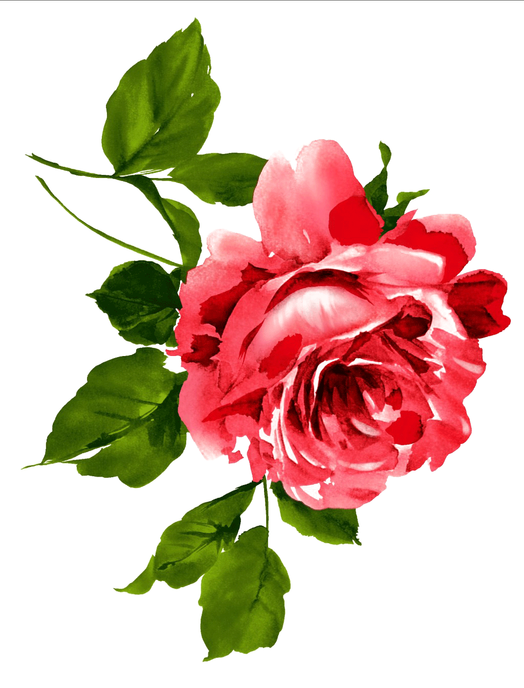
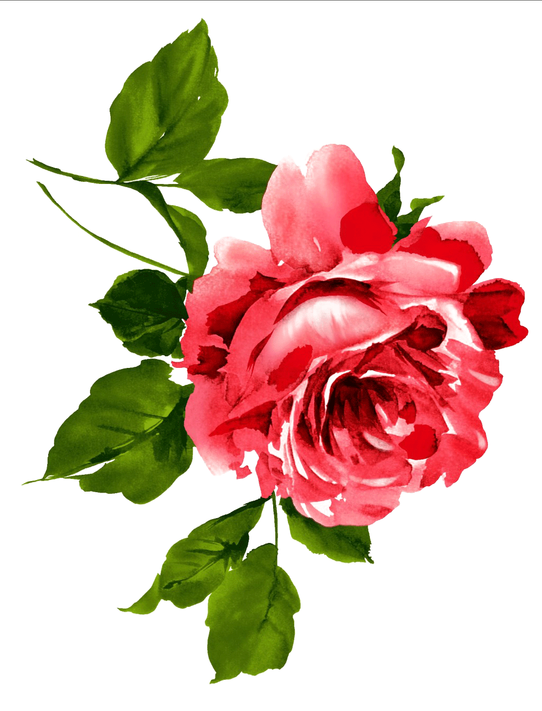
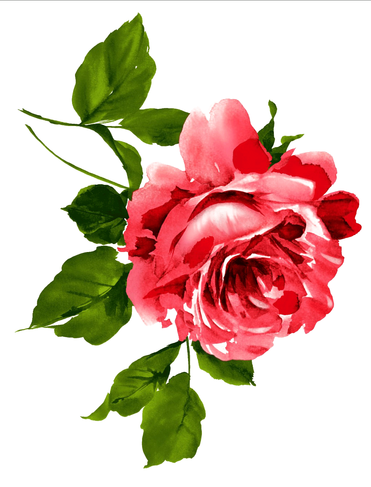
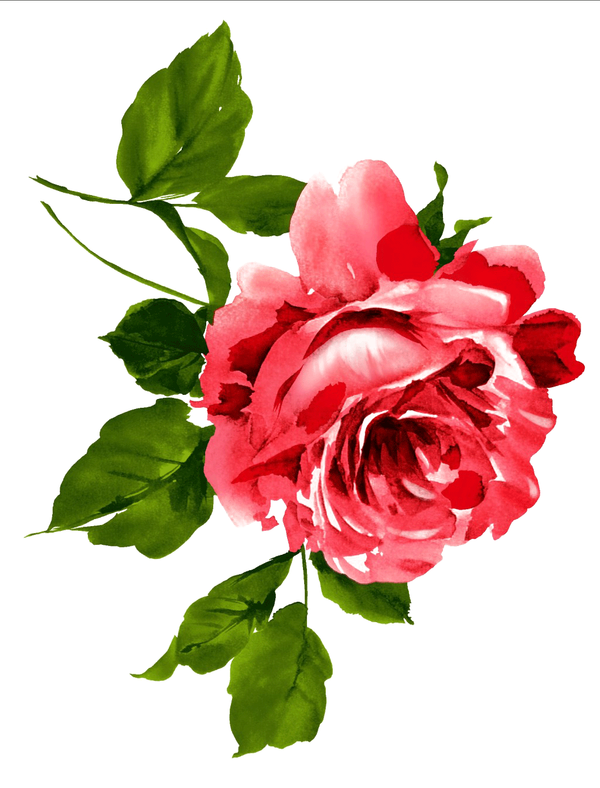

난봉가는 황해도 지방의 민요이다. 긴난봉가, 자진난봉가, 개성난봉가 등 많은 종류가 있지만, 그 원판은 긴난봉가이다. 도드리장단이나 중모리장단으로 혹은 굿거리장단으로도 이 한다. 노랫말은 대개 사랑타령이다. 보통 「난봉가」라 하면 긴난봉가, 자진난봉가, 사설난봉가를 아우러는 말이다.
난봉가 중 가장 오래된 난봉가이며, 경기·서도 지방 여러 민요의 원형에 해당된다.대체적으로 중모리장단에 맞추어 부른다. 곡명은 옛 사설에 “난봉이 났네, 난봉이 났네…….”로 시작했기 때문에 붙여진 것이다. 그러나 현재 불리는 노래말은 난봉과 관계 없는 서정적인 내용으로 되어 있다. 조선 후기부터 널리 불린 것으로 여겨지고 있다.
자진난봉가는 긴난봉가 뒤에 이어서 부르는 소리이며, 빠른굿거리장단에 얹어 보다 많은 사설을 노래한다. 넘어갈 때는 반드시 “넘어간다 넘어간다. 자주 허는 난봉가로 훨훨 넘어간다.”라는 말로 소리를 한다.황해도지방에서는 이 노래를 부르며 춤을 춘다고 한다. 사는 대개 사랑에 관한 것이 많으며 풍광을 읊거나 인생무상을 노래한 것도 있다.
〈사설난봉가〉는 서도민요로 개타령 또는 잦은개타령이라고도 한다. 비교적 빠른 볶는타령장단에 사설을 엮어가며 부르는 노래로 가사의 해학성이 뛰어나다. 노랫말을 두 번씩 반복하여 부른다. 첫 번째 사설은 비교적 리드미컬하나, 두 번째 반복되는 사설은 빠른 속도로 엮어나간다. 말을 몰아서 엮어나가는 가락과 장단이 무척 흥겹다. 노랫말 역시 오래된 것과 새롭게 창작된 것이 뒤섞여 있다.